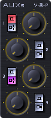

Il mixer di AudioStation è la prima console di missaggio live digitale con tecnologia VST integrata.
Diversamente dagli altri mixer, oltre a miscelare i segnali provenienti da microfoni e strumenti esterni, nei suoi canali possono essere attivati e miscelati strumenti software VST ed effetti VST da applicare ai microfoni, agli strumenti esterni e a quelli software.
La configurazione della console è di tipo 20/8/2, ovvero con 20 canali d’ingresso, 4 canali ausiliari stereo e 1 canale Master stereo.
Il layout e l’interfaccia grafica, del tutto simili a un mixer tradizionale, rendo le operazioni estremamente semplici ed intuitive, anche a utenti non esperti.
La console è equipaggiata con 6 differenti tipologie di canali:
Sono canali monofonici e possono essere utilizzati per miscelare microfoni e strumenti esterni collegati agli ingressi analogici 1-8, e/o strumenti software attivati negli Insert Slot VST. Negli Insert possono essere attivati anche effetti software con i quali elaborare i segnali di apparecchi esterni e strumenti software.
Se necessario, questi canali possono essere posti anche in stereo, a gruppi di due.
Sono canali stereo specifici per attivare strumenti VST — questi canali sono privi di ingressi audio. Nei loro Insert Slot possono essere attivati anche effetti software con i quali elaborare i suoni degli strumenti VST.
Questi quattro canali stereo ricevono i segnali dal player audio digitale incorporato nella console e, similmente agli altri canali, i segnali audio possono essere elaborati con effetti software attivati negli Insert Slot VST. Se necessario nei relativi Insert Slot posso essere attivati anche strumenti VST.
Questi canali stereo ricevono i segnali inviati dai canali Audio/VST, VST e Player attraverso le mandate ausiliarie Aux Send 1-4 (e relativi panpot). Possono essere utilizzati per attivare effetti software comuni a tutti i canali, o per il monitoraggio personalizzato dei segnali. Se necessario nei loro Insert Slot posso essere attivati anche strumenti VST.
Normalmente su questo canale stereo confluiscono i segnali di tutti i canali della console, ed è utilizzato per le regolazioni generali. Nei suoi Insert Slot possono essere attivati effetti software da applicare al mix dei segnali e, se necessario, posso essere attivati anche strumenti VST.
Ciascun canale della console è equippaggiato con i seguenti elementi:
Sono presenti 4 Insert Slot per effetti e strumenti VST, collegabili in serie, in parallelo o un mix dei due — come spiegato nella pagina VST Player.
E' inoltre importante sapere che gli Insert Slot di AudioStation operano in stereofonia anche in presenza di segnali monofonici.
Infatti, i segnali mono vengono splittati in una modalità che abbiamo definito pseudo-stereo, e che consente di applicare effetti stereo anche agli strumenti monofonici.
E' disponibile un EQ parametrico a 3 bande, ognuna con regolazione di: gain (+/- 24dB); frequenza (da 20Hz a 20KHz); campanatura (Q); fitri hi/lo shelving e peaking.
E' inoltre presente un hi-pass filter a 75Hz, 12dB/ottava, utile per eliminare i rumori del palco.
Sono presenti 4 mandate ausiliarie stereo (Aux), ognuna equipaggiata con panpot, selettore Pre/Post Fader e Bypass.
La modalità stereofonica e la presenza della manopola Panpot consente di fatto di disporre di ben 8 distinti bus aux.
Sono presenti le regolazioni di: panpot; volume, con funzione fadeout automatico regolabile; uscita audio di canale, indirizzabile al bus master o a uscite individuali.
E' inoltre presente un indicatore di livello con scala configurabile tra -48dB o -96dB, modalità di visualizzazione Peaking o RMS, LED Clip.
Oltre alle dotazioni sopra descritte, ogni canale della console dispone delle seguenti ed importanti funzionalità addizionali:
In aggiunta alla possibilità di assegnare ai singoli canali del mixer uno più ingressi/uscite MIDI, ogni canale è equipaggiato con una potente patchbay MIDI, dotata di un avanzato sistema di routing e processing, per indirizzare i dati ai plug-in secondo le esigenze.
Una spiegazione dettagliata è riportata nella pagina MIDI Patchbay.
Come spiegato nella pagina VST Player, e distintamente per ogni Insert Slot VST, è presente un avanzato sistema di controllo dei parametri automatizzabili dei plug-in, che consente la loro regolazione in tempo reale con ogni tipo di controller MIDI.
Maggiori informazioni sono riportate nella pagina MIDI Patchbay.
Un importante aspetto operativo del mixer digitale di AudioStation riguarda la possibilità di salvare in modo indipendente le impostazioni di ogni singolo canale (patch di canale), la combinazione delle patch assegnate ai canali e le impostazioni generali della console (performance), e il loro utilizzo nelle esibizioni live.
Similmente ad un sintetizzatore o ad una unità di effetti, ogni canale del mixer (inclusi i canali Aux) è dotato di ben 1000 memorie per salvare e richiamare istantaneamente le proprie regolazioni, incluso routing e mapping MIDI e qualunque combinazione di strumenti, suoni ed effetti in esso realizzata.
Con ogni patch vengono inoltre salvati i banchi di preset dei plug-in utilizzati. Questo importante accorgimento consente il coretto funzionamento delle patch anche nel caso in cui i preset vengano sostituiti con altri.
Anche il canale Master è dotato di 1000 memorie per salvare e richiamare le proprie regolazioni e le impostazioni generali. In ogni memoria, oltre alle regolazioni proprie del canale, viene salvato anche lo stato dell’intera console.
In particolare:
Questa particolare modalità operativa consente, ad esempio, di predisporre performance (scene) specifiche per ogni brano. Richiamando una performance, nei vari canali del mixer verranno caricate automaticamente le patch che uno o più musicisti hanno deciso di utilizzare, oltre agli effetti generali, le impostazioni inerenti il monitoraggio dei segnali e le eventuali tracce audio da riprodurre.
In qualsiasi istante durante l’esecuzione e in totale autonomia, ognuno sarà libero di richiamare patch differenti — ad esempio per l’esecuzione di un assolo o altro.
Per una migliore transizione tra le scene, quando viene caricata una nuova performance verranno sostituite solo le patch che differiscono da quelle in uso. In questo modo, i canali che non necessitano di cambiamenti continueranno a funzionare senza alcuna interruzione.
La funzione Preload riduce a zero i tempi di caricamento delle patch. E' utile soprattutto con i setup molto complessi o con i plug-in cosiddetti Sample Player, che utilizzano librerie con campioni sonori di dimensioni molto ampie. Mentre una patch è in uso è possibile predisporre il caricamento in memoria di una seconda patch, da attivare al momento opportuno, senza tempi di attesa.
Le patch di ogni canale e le performance possono essere comodamente selezionate con LiveControl (il pratico remote controller fornito con l’apparecchio) o via MIDI.
Con LiveControl è davvero facile richiamare le patch di canale e le performance.
Per facilitare la selezione sono inoltre presenti due pulsanti Next e Prev, che consentono di attivare direttamente il setup successivo o quello precedente.
Con gli appositi tasti e la manopola dati è sufficiente scegliere il setup desiderato — anche mentre un altro è in uso — e, al momento opportuno, caricarlo con un semplice click.
Una spiegazione dettagliata è riportata nella pagina LiveControl.
Ogni musicista collegato alla console può cambiare le patch del proprio canale/i e le performance anche con la propria master keyboard, una pedaliera o altri tipi di controller MIDI.
Come in un sintetizzatore o una unità di effetti, ogni canale del mixer di AudioStation risponde ai messaggi MIDI di cambio programma e cambio banco. In particolare, l’uso del primo o la combinazione dei due messaggi determina il numero della patch o della performance da richiamare, mentre il canale MIDI da 1 a 16 stabilisce a quale canale della console è indirizzato il cambiamento.
Quindi, indipendentemente dalle impostazioni del routing MIDI globale e di canale, è possibile cambiare sia le patch di ogni canale, sia le performance da qualsiasi ingresso MIDI.
Inoltre, nel caso in cui, per creare setup maggiormente complessi, si sia reso necessario utilizzare due o più canali della console assieme, è possibile raggrupparli e richiamare le loro patch con un unico comando.
{kind=link}